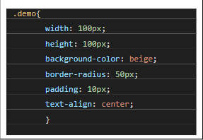
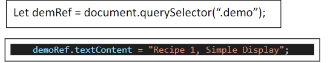
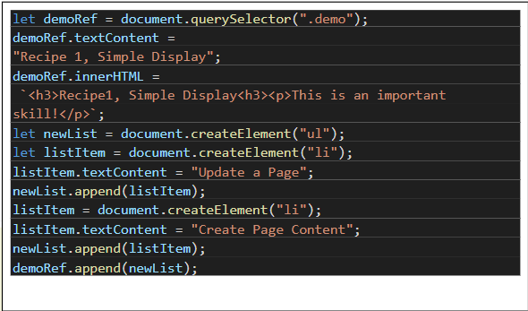
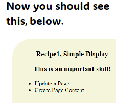
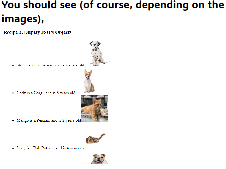
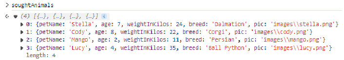

Step 1: Create a web document and fill it with basic tags
Step 2: Add a div element with class "demo" to the body
Step 3: Add script tags just before the
Step 4: Use querySelector to get a reference to the div with class "demo"
Step 5: Use textContent method to add plain text
Step 6: Add HTML code using innerHTML method
Step 7: Use the DOM createElement method with append
 JSON stands for JavaScript Object Notation, and it comes close to an array of objects, like this array of animals below. Note, it is important to make sure that objects have common attributes if these attributes are being used to display information.
Make sure that the images are referenced correctly. Then, you can use the techniques in Recipe 1 to display the animals on a web page. You can use a simple for or while loop, or array method forEach.
const petsData = [
{
petName: "Stella",
age: 7,
weightInKilos: 24,
breed: "Dalmation",
pic: "images\\stella.png"
},
{
petName: "Cody",
age: 8,
weightInKilos: 22,
breed: "Corgi",
pic: "images\\cody.png"
},
{
petName: "Mango",
age: 2,
weightInKilos: 11,
breed: "Persian",
pic: "images\\mango.png"
},
{
petName: "Lucy",
age: 4,
weightInKilos: 35,
breed: "Ball Python",
pic: "images\\lucy.png"
},
{
petName: "Buhmie",
age: 1,
weightInKilos: 28,
breed: "Bull-dog",
pic: "images\\buhmie.png"
}
];

Using the same array of objects, use either find (returns the first element) or a combination of some type of iteration and find. You can substitute your own logic instead of find if you iterate through the array – adding each found item to another array. Suppose we wanted to find all dogs with age greater than 2. This is the desired result:
